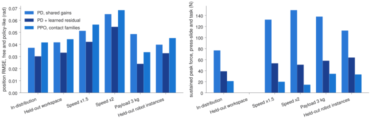
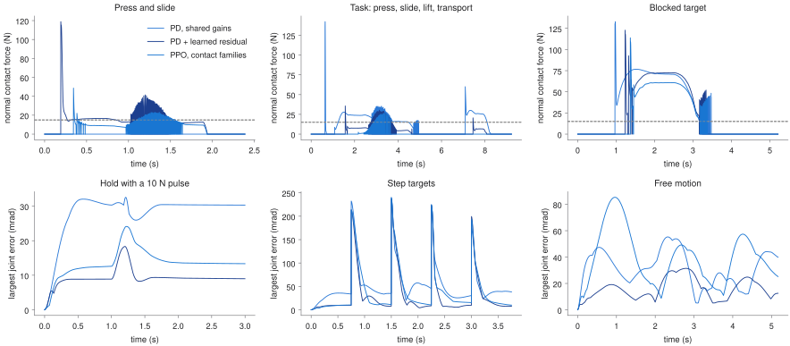
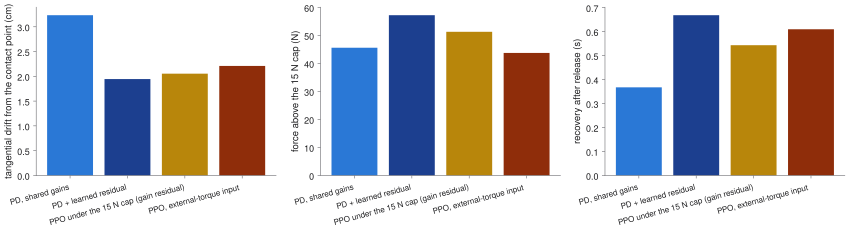

![Relative change of two learned controllers against the tuned PD on the in-distribution families (16 cases per family; mean over cases). Every metric shown is lower-is-better, so bars to the left are improvements. The first eight rows are the headline wins (tracking and force limitation); the last four are where learned controllers lose (pressing to a target, keeping contact, recovering after a block). Not significant (n.s.): the 95% bootstrap interval of the paired difference includes zero. Symmetric log axis beyond 50%.](figures/hero.svg)
We study whether the low-level feedback controller of a torque-controlled manipulator, the loop that turns position targets into motor torques at 1 kHz, should be learned rather than hand-tuned. On a simulated Franka Panda with randomized link parameters, payloads and sensor noise, a learned controller that adds a bounded neural residual to a tuned PD, with only 100 ms of proprioceptive history as input, tracks position targets more accurately than the tuned PD in every family of references we test and limits contact forces far better when the targets run into a surface: position RMSE 13.4 against 19.1 mrad in free motion, settling time 0.39 against 0.66 s on steps, sustained peak force 18 against 65 N on a held-out task sequence. These advantages hold under a shifted workspace, references twice as fast, a 3 kg payload and robot instances with doubled parameter deviations, none of which were used for training, tuning or selection. A reinforcement-learning variant trained on contact pushes the force reductions further at some cost in free-space smoothness.
The learned controllers are not better everywhere. They do not press to a target force when asked, they push as hard as the PD when a target is blocked, and they lose contact more often during a press. We have made the wanted behaviour on a blocked target explicit, stop at the surface and wait without unnecessary force, measure it, and show that no controller does it yet. That is the open problem the next phase addresses.
Almost every robot closes its lowest control loop with a PD law: a stiffness times the position error plus a damping times the velocity error, often with gravity and Coriolis compensation, at 100 Hz to 1 kHz. The gains are tuned once, by hand, for a broad range of tasks. Four observations motivate learning this loop instead.
The research question is therefore: can a learned feedback controller be versatile, better than a tuned PD across free motion, policy-like targets and contact, on robots it has not seen, with contact forces that are safe to execute on hardware?
Plant. A 7-joint Franka Panda in MuJoCo, torque-controlled at 1 kHz, with a spherical tool, a table and a wall. Every training window and every evaluation case draws a robot instance (link masses, inertias, joint friction and damping perturbed around the nominal model), a payload at the tool (0 to 3 kg in training, 0 to 2 kg in the test families, 3 kg as a held-out group) and sensor noise on the joint positions. The controller never sees the instance, the payload or any force sensor.
Controllers. The reference is a PD with gravity compensation whose seven stiffness and damping pairs were tuned by direct search on the protocol's tuning split (stiffness 47 to 395 Nm/rad, damping ratio 0.69). The learned controllers are torque laws of the same signals. We studied three parameterisations: learned gains, PD plus a learned residual torque, and a fully neural torque; and three ways to train them: gradients through the simulator, gradients through a learned dynamics model, and reinforcement learning. The controller featured here is PD plus residual: the tuned PD plus a residual bounded to half the torque limit, from a two-layer network (128 units, 134 k parameters) that sees the current position, velocity and target, and a history of positions, velocities and commanded torques over the last 100 ms at 10 ms spacing and the last 32 ms at 1 ms spacing. It was trained in the simulator by a short-horizon actor-critic method through finite-difference plant gradients (500 iterations of 24 windows of 2 s), with a critic that sees privileged quantities (contact force, payload, a reference preview) during training only. The reinforcement-learning variant fine-tunes the same network with PPO on windows of the contact families.
Seven families of references, each with its own metrics and its own definition of the wanted behaviour, scored on 16 test cases per family under paired comparisons with bootstrap confidence intervals. Composites exist for tuning and selection only; every claim below rests on the primary metrics of a family.
| Family | Reference | Primary metrics | Wanted behaviour |
|---|---|---|---|
| Hold with pulses | hold a fixed posture; a 10 N force pulse of 0.2 s hits the tool | position RMSE, deflection under the pulse, torque-rate RMS | small error and deflection, smooth torques |
| Free motion | smooth joint-space motions through the workspace | position RMSE, torque-rate RMS | tight tracking, smooth torques |
| Policy-like targets | piecewise-constant targets changing every 20 ms, as a learned policy emits them | position RMSE, torque-rate RMS | track the staircase without excess chatter |
| Step targets | joint-space steps | position RMSE, settling time, overshoot | fast settling without overshoot |
| Press and slide | approach a table or wall at speed, press 0.5 to 3 cm into it, slide, release | excess force above 15 N, sustained peak (20 ms), feasible-direction error, press deficit below 5 N, contact losses per second | bounded forces, a maintained press, tracking along the surface |
| Blocked target | the target passes 3 to 8 cm through a table or wall and comes back | excess force above 15 N, sustained peak, tangential drift from the contact point, motion while blocked, apparent stiffness, recovery after release | stop at the surface and wait with a capped force, resume promptly |
| Task (held out) | reach, descend, press 1 cm, slide 10 cm, lift, transport, press 0.5 cm, lift; never trained on | excess force, sustained peak, feasible-direction error, press deficit | the contact behaviour of the two families above, in sequence |
The first figure summarises the comparison on the in-distribution families; the table gives the numbers; the second figure shows that the same advantages hold under every held-out condition; the traces and the clips show what the controllers do.
| Family | Metric | PD, shared gains | PD + learned residual | PPO, contact families |
|---|---|---|---|---|
| Hold, 10 N pulses | Position RMSE (mrad) | 16.7 | 6.13* | 6.28* |
| Free motion | Position RMSE (mrad) | 19.1 | 13.4* | 26.3* |
| Policy-like targets | Position RMSE (mrad) | 55.3 | 47* | 57 |
| Step targets | Settling time after step (s) | 0.663 | 0.391* | 0.565 |
| Press and slide | Peak of the 20 ms low-pass filtered normal force (N) | 88.8 | 60.4* | 32.4* |
| Press and slide | Excess contact force above the 15 N cap (N) | 16.1 | 12.5 | 8.21* |
| Task (held out) | Peak of the 20 ms low-pass filtered normal force (N) | 64.7 | 17.5* | 9.91* |
| Task (held out) | Excess contact force above the 15 N cap (N) | 10.7 | 2.15* | 1.24* |
| Blocked target | Excess contact force above the 15 N cap (N) | 45.6 | 57.2* | 41.4 |
| Blocked target | Recovery after a blocked reference returns (s) | 0.367 | 0.668 | 0.699 |
| Task (held out) | Press-phase force deficit below 5 N (N) | 0.244 | 1.45* | 2.55* |
| Press and slide | Contact losses of 5 ms or more per second of press phase (1/s) | 4.33 | 8.58 | 13.6* |


Clips of the same three controllers on representative cases (the gray sphere is the commanded tool position; the plots accumulate as the clip plays).
The same tables show three consistent losses. (1) Pressing to a target. When the task family asks for a 1 cm press, the learned controllers press lightly and intermittently: the press deficit is several times the PD's. (2) Blocked targets. When the reference passes through a surface, every controller, learned or not, keeps pushing with the force its stiffness implies; the residual pushes as hard as the PD. (3) Keeping contact. During a press the learned controllers lose contact for 5 to 10 ms several times a second: a learned flinch at the reward's force limit, where the PD base spring pushes the tool back in. The reinforcement-learning variant trades more of (1) and (3) for lower forces. These are the behaviours that make a controller compliant rather than merely accurate, and they are the subject of the current deep dive.
| Group | Family | Metric | Reference | Significantly better | Significantly worse |
|---|---|---|---|---|---|
| In-distribution families | Hold (10 N pulses) | Position RMSE (rad) | 0.0167 | residual: 0.00613 (-63%); PPO contact: 0.00628 (-62%) | — |
| In-distribution families | Hold (10 N pulses) | Peak deflection under 10 N pulse (m) | 0.016 | residual: 0.0118 (-26%) | — |
| In-distribution families | Hold (10 N pulses) | Torque rate RMS (Nm/s) | 48.7 | residual: 43.4 (-11%) | PPO contact: 73.4 (+51%) |
| In-distribution families | Free motion | Position RMSE (rad) | 0.0191 | residual: 0.0134 (-30%) | PPO contact: 0.0263 (+38%) |
| In-distribution families | Free motion | Torque rate RMS (Nm/s) | 52.9 | residual: 44.5 (-16%) | PPO contact: 80.3 (+52%) |
| In-distribution families | Policy-like targets | Position RMSE (rad) | 0.0553 | residual: 0.047 (-15%) | — |
| In-distribution families | Policy-like targets | Torque rate RMS (Nm/s) | 1.77e+03 | residual: 1.57e+03 (-11%); PPO contact: 1.71e+03 (-3%) | — |
| In-distribution families | Step targets | Position RMSE (rad) | 0.0444 | residual: 0.0382 (-14%); PPO contact: 0.041 (-8%) | — |
| In-distribution families | Step targets | Settling time after step (s) | 0.663 | residual: 0.391 (-41%) | — |
| In-distribution families | Step targets | Step overshoot (-) | 0.0176 | PPO contact: 0.00746 (-58%) | — |
| In-distribution families | Contact (press, slide) | Excess contact force above 30 N (mean while in contact) (N) | 8.95 | residual: 5.62 (-37%); PPO contact: 3.54 (-61%) | — |
| In-distribution families | Contact (press, slide) | Excess contact force above the 15 N cap (mean while in contact) (N) | 16.1 | PPO contact: 8.21 (-49%) | — |
| In-distribution families | Contact (press, slide) | Peak normal force (N) | 169 | residual: 106 (-37%); PPO contact: 56.2 (-67%) | — |
| In-distribution families | Contact (press, slide) | Peak of the 20 ms low-pass filtered normal force (sustained force) (N) | 88.8 | residual: 60.4 (-32%); PPO contact: 32.4 (-64%) | — |
| In-distribution families | Contact (press, slide) | Feasible-direction tool error (m) | 0.0403 | residual: 0.0222 (-45%) | — |
| In-distribution families | Contact (press, slide) | Press-phase force deficit below 5 N (N) | 1.39 | residual: 0.333 (-76%) | — |
| In-distribution families | Contact (press, slide) | Contact losses of 5 ms or more during contact phase (-) | 9.5 | — | PPO contact: 34.1 (+259%) |
| In-distribution families | Contact (press, slide) | Contact losses of 5 ms or more per second of press phase (1/s) | 4.33 | — | PPO contact: 13.6 (+215%) |
| In-distribution families | Blocked target | Excess contact force above 30 N (mean while in contact) (N) | 32.7 | PPO contact: 27.8 (-15%) | residual: 43 (+31%) |
| In-distribution families | Blocked target | Excess contact force above the 15 N cap (mean while in contact) (N) | 45.6 | — | residual: 57.2 (+25%) |
| In-distribution families | Blocked target | Peak normal force (N) | 134 | PPO contact: 99.8 (-26%) | — |
| In-distribution families | Blocked target | Peak of the 20 ms low-pass filtered normal force (sustained force) (N) | 90.4 | PPO contact: 73.1 (-19%) | — |
| In-distribution families | Blocked target | Apparent stiffness: mean normal force per metre of reference depth while blocked (after the first 0.3 s of contact) (N/m) | 1.18e+03 | — | residual: 1.44e+03 (+22%) |
| In-distribution families | Blocked target | Feasible-direction tool error (m) | 0.0376 | residual: 0.0228 (-39%) | — |
| In-distribution families | Task (held out) | Excess contact force above 30 N (mean while in contact) (N) | 3.86 | residual: 0.171 (-96%); PPO contact: 0.0352 (-99%) | — |
| In-distribution families | Task (held out) | Excess contact force above the 15 N cap (mean while in contact) (N) | 10.7 | residual: 2.15 (-80%); PPO contact: 1.24 (-88%) | — |
| In-distribution families | Task (held out) | Peak normal force (N) | 123 | residual: 36.5 (-70%); PPO contact: 21.6 (-82%) | — |
| In-distribution families | Task (held out) | Peak of the 20 ms low-pass filtered normal force (sustained force) (N) | 64.7 | residual: 17.5 (-73%); PPO contact: 9.91 (-85%) | — |
| In-distribution families | Task (held out) | Feasible-direction tool error (m) | 0.0241 | residual: 0.014 (-42%) | — |
| In-distribution families | Task (held out) | Press-phase force deficit below 5 N (N) | 0.244 | — | residual: 1.45 (+493%); PPO contact: 2.55 (+943%) |
| Held-out workspace (base yaw 1.2 to 2.6 rad) | Free motion | Position RMSE (rad) | 0.0263 | residual: 0.0146 (-44%) | — |
| Held-out workspace (base yaw 1.2 to 2.6 rad) | Free motion | Torque rate RMS (Nm/s) | 54.7 | residual: 46.1 (-16%) | PPO contact: 74.2 (+36%) |
| Held-out workspace (base yaw 1.2 to 2.6 rad) | Policy-like targets | Position RMSE (rad) | 0.0572 | residual: 0.0518 (-9%) | — |
| Held-out workspace (base yaw 1.2 to 2.6 rad) | Policy-like targets | Torque rate RMS (Nm/s) | 1.82e+03 | residual: 1.62e+03 (-11%) | — |
| Speed x1.5 | Free motion | Position RMSE (rad) | 0.0248 | residual: 0.0189 (-24%) | PPO contact: 0.0334 (+34%) |
| Speed x1.5 | Free motion | Torque rate RMS (Nm/s) | 63.4 | — | PPO contact: 123 (+94%) |
| Speed x1.5 | Policy-like targets | Position RMSE (rad) | 0.0777 | residual: 0.0654 (-16%) | — |
| Speed x1.5 | Policy-like targets | Torque rate RMS (Nm/s) | 1.95e+03 | residual: 1.72e+03 (-12%); PPO contact: 1.85e+03 (-5%) | — |
| Speed x1.5 | Contact (press, slide) | Excess contact force above 30 N (mean while in contact) (N) | 8.14 | residual: 3.14 (-61%); PPO contact: 1.32 (-84%) | — |
| Speed x1.5 | Contact (press, slide) | Excess contact force above the 15 N cap (mean while in contact) (N) | 14.5 | residual: 10 (-31%); PPO contact: 5.57 (-62%) | — |
| Speed x1.5 | Contact (press, slide) | Peak normal force (N) | 295 | residual: 156 (-47%); PPO contact: 62.9 (-79%) | — |
| Speed x1.5 | Contact (press, slide) | Peak of the 20 ms low-pass filtered normal force (sustained force) (N) | 136 | residual: 78.8 (-42%); PPO contact: 29.8 (-78%) | — |
| Speed x1.5 | Task (held out) | Excess contact force above 30 N (mean while in contact) (N) | 5.47 | residual: 0.613 (-89%); PPO contact: 0.186 (-97%) | — |
| Speed x1.5 | Task (held out) | Excess contact force above the 15 N cap (mean while in contact) (N) | 13.1 | residual: 2.45 (-81%); PPO contact: 1.22 (-91%) | — |
| Speed x1.5 | Task (held out) | Peak normal force (N) | 298 | residual: 61.2 (-79%); PPO contact: 28.3 (-90%) | — |
| Speed x1.5 | Task (held out) | Peak of the 20 ms low-pass filtered normal force (sustained force) (N) | 129 | residual: 28 (-78%); PPO contact: 10.2 (-92%) | — |
| Speed x1.5 | Task (held out) | Feasible-direction tool error (m) | 0.0267 | residual: 0.0156 (-42%) | — |
| Speed x1.5 | Task (held out) | Press-phase force deficit below 5 N (N) | 0 | — | PPO contact: 2.07 (+206537082108%) |
| Speed x1.5 | Task (held out) | Contact losses of 5 ms or more per second of press phase (1/s) | 14.3 | — | residual: 21.3 (+48%) |
| Speed x2 | Free motion | Position RMSE (rad) | 0.0326 | residual: 0.0264 (-19%) | PPO contact: 0.0399 (+22%) |
| Speed x2 | Free motion | Torque rate RMS (Nm/s) | 92.6 | — | PPO contact: 181 (+96%) |
| Speed x2 | Policy-like targets | Position RMSE (rad) | 0.0975 | residual: 0.0827 (-15%) | — |
| Speed x2 | Policy-like targets | Torque rate RMS (Nm/s) | 1.99e+03 | residual: 1.76e+03 (-12%); PPO contact: 1.89e+03 (-5%) | — |
| Speed x2 | Contact (press, slide) | Excess contact force above 30 N (mean while in contact) (N) | 9.4 | residual: 3.69 (-61%); PPO contact: 2.27 (-76%) | — |
| Speed x2 | Contact (press, slide) | Excess contact force above the 15 N cap (mean while in contact) (N) | 16.3 | residual: 10.1 (-38%); PPO contact: 6.8 (-58%) | — |
| Speed x2 | Contact (press, slide) | Peak normal force (N) | 356 | residual: 156 (-56%); PPO contact: 53.3 (-85%) | — |
| Speed x2 | Contact (press, slide) | Peak of the 20 ms low-pass filtered normal force (sustained force) (N) | 161 | residual: 74.3 (-54%); PPO contact: 20.4 (-87%) | — |
| Speed x2 | Task (held out) | Excess contact force above 30 N (mean while in contact) (N) | 7.35 | residual: 1.08 (-85%); PPO contact: 0.425 (-94%) | — |
| Speed x2 | Task (held out) | Excess contact force above the 15 N cap (mean while in contact) (N) | 13.8 | residual: 2.62 (-81%); PPO contact: 1.31 (-91%) | — |
| Speed x2 | Task (held out) | Peak normal force (N) | 360 | residual: 53.9 (-85%); PPO contact: 26 (-93%) | — |
| Speed x2 | Task (held out) | Peak of the 20 ms low-pass filtered normal force (sustained force) (N) | 138 | residual: 27.3 (-80%); PPO contact: 8.79 (-94%) | — |
| Speed x2 | Task (held out) | Press-phase force deficit below 5 N (N) | 0.451 | — | residual: 2.49 (+452%); PPO contact: 2.5 (+454%) |
| Payload 3 kg | Free motion | Position RMSE (rad) | 0.0486 | residual: 0.0239 (-51%); PPO contact: 0.0336 (-31%) | — |
| Payload 3 kg | Free motion | Torque rate RMS (Nm/s) | 58 | residual: 47.2 (-19%) | PPO contact: 88.1 (+52%) |
| Payload 3 kg | Contact (press, slide) | Excess contact force above 30 N (mean while in contact) (N) | 11.6 | residual: 5.97 (-49%) | — |
| Payload 3 kg | Contact (press, slide) | Peak normal force (N) | 292 | residual: 152 (-48%); PPO contact: 71.5 (-76%) | — |
| Payload 3 kg | Contact (press, slide) | Peak of the 20 ms low-pass filtered normal force (sustained force) (N) | 136 | residual: 81.2 (-40%); PPO contact: 40 (-71%) | — |
| Payload 3 kg | Contact (press, slide) | Feasible-direction tool error (m) | 0.0502 | residual: 0.0233 (-54%) | — |
| Payload 3 kg | Blocked target | Excess contact force above 30 N (mean while in contact) (N) | 46.3 | residual: 35 (-24%); PPO contact: 24.6 (-47%) | — |
| Payload 3 kg | Blocked target | Recovery after a blocked reference returns (s) | 1.57 | residual: 0.639 (-59%) | — |
| Payload 3 kg | Blocked target | Feasible-direction tool error (m) | 0.0847 | residual: 0.0254 (-70%); PPO contact: 0.032 (-62%) | — |
| Payload 3 kg | Task (held out) | Excess contact force above 30 N (mean while in contact) (N) | 18.2 | residual: 1.01 (-94%); PPO contact: 0.376 (-98%) | — |
| Payload 3 kg | Task (held out) | Excess contact force above the 15 N cap (mean while in contact) (N) | 29.8 | residual: 11 (-63%); PPO contact: 7.55 (-75%) | — |
| Payload 3 kg | Task (held out) | Peak normal force (N) | 297 | residual: 68.6 (-77%); PPO contact: 54.7 (-82%) | — |
| Payload 3 kg | Task (held out) | Peak of the 20 ms low-pass filtered normal force (sustained force) (N) | 140 | residual: 34.9 (-75%); PPO contact: 28.7 (-79%) | — |
| Payload 3 kg | Task (held out) | Feasible-direction tool error (m) | 0.0636 | residual: 0.0179 (-72%); PPO contact: 0.024 (-62%) | — |
| Payload 3 kg | Task (held out) | Contact losses of 5 ms or more per second of press phase (1/s) | 0 | — | residual: 1.48 (+148064949314%) |
| Held-out robot instances (doubled deviations) | Free motion | Position RMSE (rad) | 0.0184 | — | PPO contact: 0.027 (+47%) |
| Held-out robot instances (doubled deviations) | Free motion | Torque rate RMS (Nm/s) | 51.5 | residual: 43.7 (-15%) | PPO contact: 81.6 (+58%) |
| Held-out robot instances (doubled deviations) | Policy-like targets | Position RMSE (rad) | 0.0612 | residual: 0.0519 (-15%) | — |
| Held-out robot instances (doubled deviations) | Policy-like targets | Torque rate RMS (Nm/s) | 1.89e+03 | residual: 1.66e+03 (-12%); PPO contact: 1.8e+03 (-5%) | — |
| Held-out robot instances (doubled deviations) | Contact (press, slide) | Excess contact force above the 15 N cap (mean while in contact) (N) | 15.6 | PPO contact: 8.74 (-44%) | — |
| Held-out robot instances (doubled deviations) | Contact (press, slide) | Peak normal force (N) | 217 | residual: 112 (-48%); PPO contact: 58.2 (-73%) | — |
| Held-out robot instances (doubled deviations) | Contact (press, slide) | Peak of the 20 ms low-pass filtered normal force (sustained force) (N) | 113 | residual: 63.8 (-43%); PPO contact: 33.2 (-71%) | — |
| Held-out robot instances (doubled deviations) | Blocked target | Peak normal force (N) | 112 | PPO contact: 82.2 (-27%) | — |
| Held-out robot instances (doubled deviations) | Blocked target | Feasible-direction tool error (m) | 0.0431 | residual: 0.023 (-47%) | — |
What should a controller do when its position target is unreachable? The protocol had rewarded following the part of the reference that remains feasible, i.e. sliding along the surface; we now define the wanted response as stop at the surface and wait: hold the point where the tool first touched, apply no more force than the 15 N cap, and resume tracking when the reference returns. The cap itself follows what pick-and-place, peg insertion and light connector tasks need (connector datasheets list 20 to 30 N mating forces; third-party Franka software defaults its collision threshold to 30 N). Two metrics make the definition measurable, the tangential drift from the first-contact point and the fraction of time in motion while blocked, next to the force above the cap, the sustained peak, the apparent stiffness (force per metre of commanded depth) and the recovery after release.
| Controller | Drift from contact point (cm) | Moving while in contact (-) | Force above 15 N (N) | Sustained peak (N) | Apparent stiffness (N/m) | Recovery after release (s) |
|---|---|---|---|---|---|---|
| PD, shared gains | 3.2 | 0.31 | 45.6 | 90 | 1180 | 0.37 |
| PD + learned residual | 1.9 | 0.26 | 57.2 | 93 | 1441 | 0.67 |
| PPO, contact families | 0.9 | 0.21 | 41.4 | 73 | 1093 | 0.70 |
| PPO under the 15 N cap (gain residual) | 2.1 | 0.26 | 51.3 | 89 | 1312 | 0.54 |
| PPO, external-torque input | 2.2 | 0.28 | 43.7 | 85 | 1153 | 0.61 |

Three findings shaped the current approach. First, the reward must name the behaviour: the original reward penalised force above a limit but never asked for a maintained press, and evaluated on saved episodes it preferred intermittent light contact to a steady press. The current reward adds, while the reference is inside a surface, a kernel on the normal force around the force the commanded depth implies (capped at 15 N) and switches off the joint kernel that would ask for the infeasible depth; audited on identical windows against a privileged exemplar (a PD whose gains drop to 0.3 only while the reference is inside), it ranks the exemplar first on both surface families. On blocked windows the privileged exemplar scores +0.22 reward units per step under the new reward, the PD -4.91 and the learned residual -6.77. Second, the impact transient must not dominate: a blind position controller cannot avoid the impact at the reference speed, and a one-step force penalty of an impact is a hundred times the tracking reward, so gradients through it teach softening everywhere; the force terms now act on a 20 ms filtered force, and the actor-critic route no longer backpropagates through the contact force at all. Third, the data must contain the behaviour: a sign error in the blocked-reference generator had left 60% of the blocked training windows without any block, and the wall references had the hand reach the wall before the tool; both are fixed, with regression tests, and every table in this summary is computed on the corrected protocol.
Two further observations guide the next phase. A linear probe of the featured controller's internal features decodes 'tool in contact' with only 0.76 accuracy and a 0.7 s median delay, so contact is not something the network currently senses promptly; giving it the robot model's external-torque estimate (the signal a Panda exposes on hardware) produced the first fine-tuned arms to beat their warm start on validation, before training was paused for this checkpoint. And a residual parameterised as bounded multipliers of the PD gains, so that yielding is a small action, was never explored by PPO at the exploration width used, which is a property of the optimiser setting, not of the parameterisation.